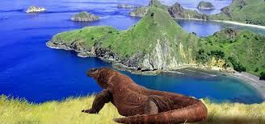
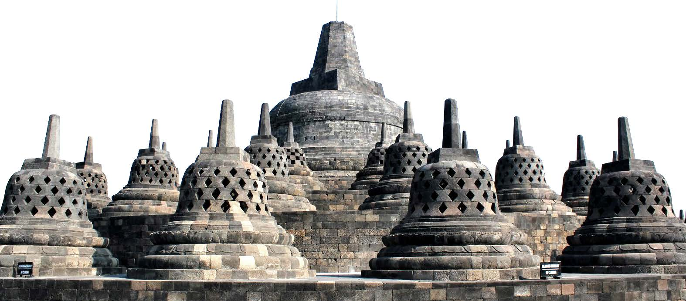
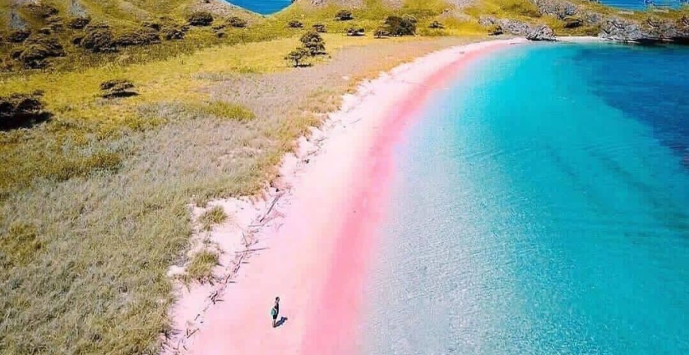

Selamat datang di website kami, teman perjalanan anda menuju petualangan yang sangat menyenangkan.kami adalah platform traveling yang bersedia untuk membantu anda merencanakan,menemukan,dan menikmati liburan santai hingga ekspedisi penuh tantangan.
Temukan Semua Keindahan Di Setiap Sudut Indonesia
Jelajahi destinasi pariwisata yang cantik, indah, dan rasakan petualangan yang tak terlupakan. Ayo mulai perjalananmu!
Jelajahi Sekarang!Rekomendasi Tempat

Danau Toba
Jelajahi Danau Toba, danau vulkanik terbesar di dunia dengan pemandangan pegunungan yang megah dan air biru yang tenang. Di tengahnya, Pulau Samosir menyimpan kekayaan budaya Batak yang unik. Nikmati keindahan alam, beragam aktivitas air, dan keramahan penduduk lokal di destinasi Sumatera Utara yang tak terlupakan ini.

Pulau Komodo
Rasakan sensasi bertemu langsung dengan Komodo, kadal purba raksasa yang hanya ada di sini. Jelajahi lanskap unik Pulau Komodo, nikmati keindahan pantai berpasir merah muda yang langka, dan selami kekayaan bawah lautnya yang memukau. Pengalaman tak terlupakan menanti Anda di Nusa Tenggara Timur

Candi Borobodur
Candi Borobudur adalah candi Buddha terbesar di dunia yang terletak di Magelang, Jawa Tengah, Indonesia. Dibangun pada abad ke-9, candi ini terkenal dengan arsitektur megah bertingkat serta relief batu yang menggambarkan kisah-kisah Buddha. Dikelilingi oleh pemandangan alam yang indah, Borobudur menjadi destinasi wisata budaya dan spiritual yang ikonik di Indonesia.

Pantai Pink Lombok
Terletak di Desa Sekaroh, Kecamatan Jerowaru, Kabupaten Lombok Timur, Nusa Tenggara Barat. Pantai ini, yang juga dikenal sebagai Pantai Tangsi, menawarkan suasana tenang dengan ombak yang relatif kecil, cocok untuk berenang dan snorkeling. Keindahan alam sekitar, seperti bukit hijau dan vegetasi tropis, menambah daya tarik tempat ini .